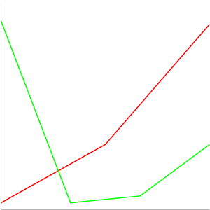

簡易形式での指定(chd=s)
データを指定する場合に数値を直接指定するのではなく文字を使ってデータを指定します。書式は次の通りです。
chd=s:<データを表す文字列>
データを表す文字列として使用できる文字は「A から Z」「a から z」「0 から 9」です。各文字の対応表は次の通りです。
A -> 0 B -> 1 ... Z -> 25 a -> 26 b -> 27 ... z -> 51 0 -> 52 1 -> 53 ... 9 -> 61
例えば{5, 12, 54, 29}のような4つのデータを表すパラメータは「chd=s:FM2d」となります。
簡易形式の場合はこのように0から61までの値しか扱うことは出来ません。その代わりこの形式の場合は各データの値は1つの文字で表すことが出来るため、値と値の区切り文字が不用となり値に対応した文字を連続で記述することが出来ます。その結果、URLを短く記述できるメリットがあります。
では実際にサンプルを試してみます。
http://chart.apis.google.com/chart? chs=300x300 &chd=s:FM2d &cht=lc
系統を追加する
1つの系統だけではなく複数の系統をデータとして指定することが出来ます。書式は次の通りです。
chd=s:<データを表す文字列>,<データを表す文字列>,<データを表す文字列>
1つの系統毎にデータを表す文字列を作成し、区切り文字としてコンマ(,)を使って続けて記述します。
例えば次のように記述します。
chd=s:CTL2,Fbcx,3CET
では実際にサンプルを試してみます。
http://chart.apis.google.com/chart? chs=300x300 &chd=s:CTL2,Fbcx,3CET &cht=lc &chco=ff0000,00ff00,0000ff
上記では各系列毎に色を指定しています。色の指定方法は別のページで詳しく確認します。
データが無い場合の記述方法
例えば2つの系列があった場合に、1つの系列はデータが4つあるがもう1つの系列はデータが3つしかない場合を考えてみます。
chd=s:CT2,3CET

それぞれの系列でデータの数が異なると、描画されるX軸の位置が違ってしまいます。
このような場合、データが存在しない箇所にアンダースコア(_)を記述することが出来ます。例えば次の例では最初の系列の最後の値としてアンダースコアを指定しています。
chd=s:CT2_,3CET
アンダースコアを使うことでデータが存在しない場合であっても系列毎にデータの数をそろえることが出来ます。
では実際にサンプルを試してみます。
http://chart.apis.google.com/chart? chs=300x300 &chd=s:CTL_rW,3CET37 &cht=lc &chco=ff0000,0000ff
上記では最初の系列の4番目のデータとしてアンダースコアを記述しています。
( Written by Tatsuo Ikura )

著者 / TATSUO IKURA
初心者～中級者の方を対象としたプログラミング方法や開発環境の構築の解説を行うサイトの運営を行っています。